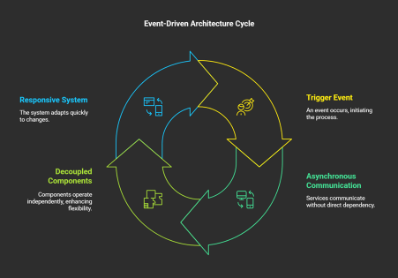

Blog & Publications
Sharing insights and expertise on solution architecture, cloud
technologies, and digital transformation.

Unleashing Scalability: Event-Driven Architectures with Serverless Computing
Cloud computing, event-driven architectures coupled with serverless computing are emerging as a transformative force.
EDA
Cloud
Architecture
Web3: The Intro
The evolution of the internet has continually reshaped the way we interact, transact, and communicate.
Web3.0
Internet
Blockchain
Cloud Computing can enable digital transformation
The cloud plays a crucial role in enabling digital transformation by providing a scalable, flexible, and cost-effective foundation for businesses to adopt and leverage digital technologies..
Digital Transformation
Flexible
Cloud
Paving the Way: Sustainability and Green Tech in Digital Transformation
In an era where the imperative to address environmental challenges has never been more pressing, the intersection of digital transformation and sustainability emerges as a beacon of hope.
Green Tech
Digital Transformation
Environment
Janurary, 2024
•
3 min read
Empowering Charities: The Transformative Impact of Serverless Computing on Mission-driven Organizations
Serverless computing offers several advantages that can greatly benefit charities and nonprofit organizations in their mission to make a positive impact on society.
Charity
Serverless
Computing
November, 2023
•
6 min read
Embracing the Digital Age: The Importance of a Digital Strategy for Charities
In the fast-paced world of technology, the digital landscape has revolutionized the way organizations operate, communicate, and engage with their stakeholders.
Charity
Digital Strategy
Technology
November, 2023
•
3 min read
Let’s compare the Serverless Platforms (AWS Lambda, Azure Functions, Google Cloud Functions)
AWS Lambda, Azure Functions, and Google Cloud Functions are among the most popular serverless platforms around.
Serverless Platforms
Cloud
Providers
September, 2023
•
4 min read
Unravelling the Digital Twin: A Virtual Bridge to the Physical World
In the ever-evolving landscape of technology, concepts like the Internet of Things (IoT) and Industry 4.0 have revolutionized the way we interact with the world.
Digital Twin
Virtual World
Tech
August, 2023
•
3 min read
How AWS has transformed Formula 1 Racing
In the past few years, I have really gotten into Formula 1 (F1), and I can officially say I am a HUGE fan of the sport. I watch each race when I can. No matter the time zone!
AWS
F1
Sport
August, 2023
•
6 min read
Embracing the Digital Frontier: A Journey into Digital Transformation
Traditional models of operation are becoming obsolete, and those who do not embrace change risk being left behind.
Transformation
Digital
Companies
What is a Digital Strategy?
I often get asked by friends, colleagues, and non-profit organisations about what is a digital strategy and how I go about implementing one.
Strategy
Digital
Evolution
Building a Webhook in AWS
How to handle real-time updates from 3rd parties via webhooks with highly scalable serverless AWS Lambda functions behind API Gateway.
WebDev
AWS
Serverless
DevOps
How Oracle Cloud has enhanced the English Premier League
How Oracle has helped the English Premier League make use of its data.
Oracle
Data
EPL
Football
How Serverless computing can save costs and increase scalability for businesses
I investigate how serverless can save costs and increase scalability for businesses.
WebDev
Serverless
Business
Scalability
Serverless computing use cases within the healthcare industry.
Exploration on how serverless computing has taken root within the healthcare industry
Cloud
Serverless
Healthcare
Serverless security and best practices in AWS.
Documentation of the best practices when implementing security within your serverless applications.
Cloud
Serverless
Security
Which is the best language for AWS Lambda (and you?)
Quick overview of the different programming languages on offer within AWS Lambda
AWS
Lambda
Languages